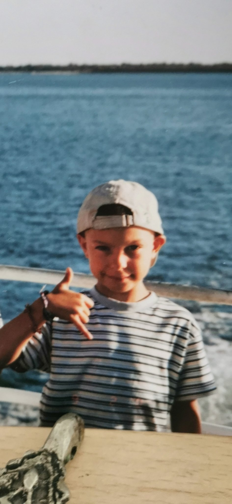

My report page in the course 1DV525

This is my report-page in the course. This page contains a presentation of myself. Keep this site updated all through the course and hand it in, as part of the final grading, with each assignment and at the end of the course.
So, a presentation might be in order. I'll begin.
My name is Leonardo Pedro, I was born and raised in Portugal in a town right by the coast side called Cascais near Lisbon where I used to live with my parents and my tween brother. I am a big fan of sports, I used to swim back in Portugal trying to become professional swimmer but at the end of two years trying and almost get it, I left to Sweden to pursue my studies and hopefully get a better future for myself. At the moment I m not swimming but I do gym and rockclimbing to keep me busy and I'm also into videogames a lot, where I lose my temper playing League of Legends and HearStone mainly. I worked as a lifeguard for 4 years in summer vacations and I also worked a bit as a builder in constructions.
I hope you got to know me better!
Lots of love Leo!